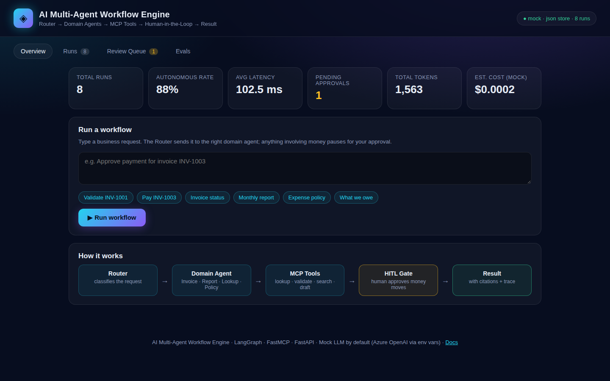
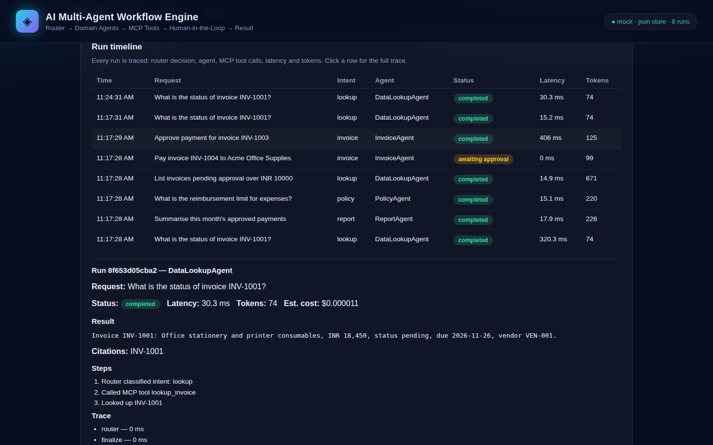
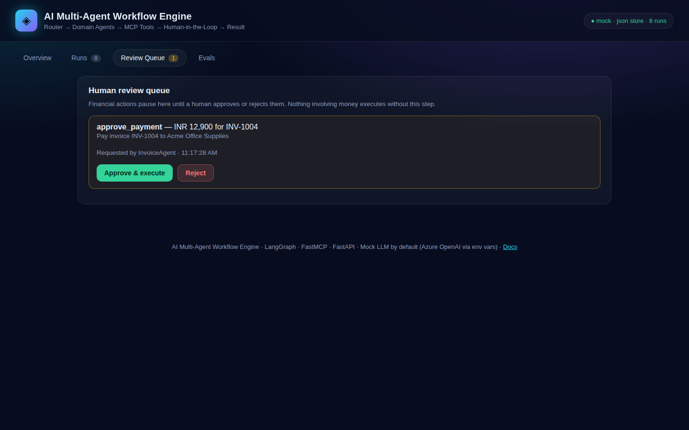
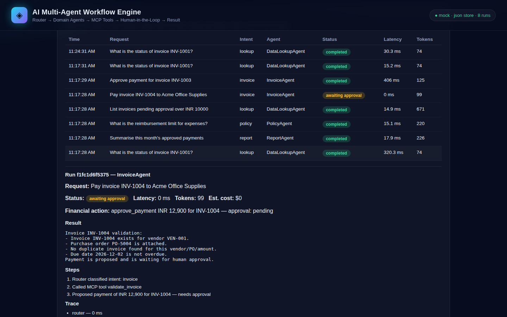
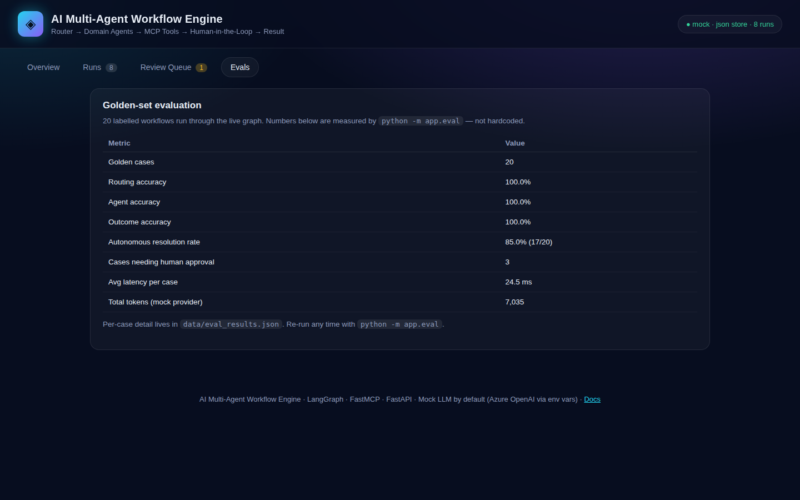

You type a business request in plain English. A router figures out what kind of job it is, sends it to the right specialist agent, and that agent does the work using a shared set of tools. If the job involves money, everything stops and waits for a human before anything is paid. That is the whole idea.
* Measured by python -m app.eval on this repo's 20-case golden set. See results.
No jargon needed. Here is the idea in three sentences.
Business teams get the same requests all day: “Is this invoice real?”, “What do we owe this vendor?”, “What is the leave policy?” Answering them by hand is slow, and letting an AI pay invoices on its own is dangerous.
Split the work between specialists. One agent only handles invoices, one only writes reports, one only looks up data, one only answers policy questions. A router sends each request to the right specialist, and every specialist uses the same toolbox.
Reading is free, paying is not. Anything that moves money pauses for a human — the system literally cannot pay without an approval. And if a multi-step job fails halfway, it undoes the steps it already did, so nothing is left half-finished.
The animation starts when you scroll here. Click any step to highlight it in the diagram.
Each agent owns one kind of work, and each one only calls tools through MCP.
Invoice intake and validation. Checks the purchase order, flags duplicates, spots overdue invoices, and proposes payments — never executes them.
validate_invoice · lookup_invoice
Report generation from real figures: totals, pending counts, overdue amounts, per-vendor breakdowns — drafted from the ledger, not invented.
draft_report · get_ledger
Structured data lookup. Finds invoices, vendors and balances, and answers with citations so you can check every fact it states.
lookup_invoice · list_vendors
Policy and handbook Q&A with retrieval over seeded documents (expense, leave, procurement, travel). Returns the matching section, not a guess.
search_policy
Three mechanisms do the heavy lifting. They are enforced in code, not just documented.
A financial action cannot execute without approval is True. The graph pauses at an interrupt(); the only way forward is a human decision in the review queue. Tests prove a payment never runs without approval, and a rejection leaves no side effects.
A payment is three steps: reserve funds, post the ledger entry, notify the vendor. If step three fails, the saga runs compensations in reverse — reverses the ledger entry, releases the reservation. Nothing is left half-applied, and every step is idempotent, so resuming never double-pays.
Like a save point in a video game. State is checkpointed after every step (Postgres when DATABASE_URL is set, SQLite otherwise). Kill the process mid-payment and restart it — the run resumes from the checkpoint and the payment is applied exactly once.
An eval harness runs a 20-case golden set of labelled workflows through the live graph and scores it. These are the numbers from the run on 8 Nov 2026, mock provider. Re-run any time with python -m app.eval.
| Metric | Value |
|---|---|
| Golden cases | 20 |
| Routing accuracy | 100.0% |
| Agent accuracy | 100.0% |
| Outcome accuracy | 100.0% |
| Autonomous resolution rate | 85.0% (17/20) |
| Cases needing human approval | 3 |
| Avg latency per case | 24.5 ms |
| Total tokens (mock provider) | 7,035 |
The 3 cases that need approval are the 3 payment/credit requests in the golden set — by design, those can never resolve autonomously. Per-case detail: data/eval_results.json.
A note on the 88%. In production at BDO India, the same architecture resolved 88% of 100+ workflows autonomously. That is a production result from a different system and dataset. This repo's own measured number is 85.0% on its 20-case golden set. They are not the same number, and this page does not mix them up.
One command. No keys needed — the mock LLM provider is the default, so everything runs offline and deterministically.
# 1. Set up python -m venv .venv && source .venv/bin/activate pip install -r requirements.txt # 2. Run uvicorn app.main:app --port 8000 # 3. Open http://127.0.0.1:8000 and try: # "Validate invoice INV-1001" # "Approve payment for invoice INV-1003" (pauses for approval) # "What is the expense reimbursement limit?"
With Docker (api + Postgres): docker compose up --build
Run the tests and the eval:
pytest -q python -m app.eval
API: POST /api/runs · GET /api/approvals · POST /api/approvals/{id}/approve · GET /api/metrics · GET /api/eval · MCP server at /mcp. Full list in the README.
Real screenshots of the running dashboard — not mockups.





A specialist worker that does one kind of job. The InvoiceAgent only handles invoices; the PolicyAgent only answers policy questions. Splitting the work makes each one easier to test, easier to trust, and easier to replace.
The Model Context Protocol — a standard way for an AI system to call tools. Here it is a FastMCP server that exposes named tools (lookup, validate, search, draft). Agents call the tools; they never touch the data directly, so every data access is logged in one place.
A multi-step job where every step knows how to undo itself. If step three fails, steps two and one are undone in reverse order. Think of it as a checklist that erases itself cleanly when something goes wrong.
No — and that is the point. A payment pauses at the human-in-the-loop gate and waits in the review queue. The graph cannot proceed without a human clicking Approve. The tests prove it: a payment without approval never executes, and a rejection leaves zero side effects.
No. The mock provider is the default: deterministic, offline, and what the tests and eval use. Set AZURE_OPENAI_ENDPOINT, AZURE_OPENAI_API_KEY and AZURE_OPENAI_DEPLOYMENT to switch to a real Azure OpenAI model — and re-run the eval before quoting any accuracy number with it.
No. Vendors, invoices and policies are realistic but invented seed data, for demo and evaluation. The golden set uses dates relative to today so it never goes stale.
The Docker path and the Postgres checkpointer were not run end to end on the build machine (no Docker or Postgres there), and the Qdrant backend needs a live Qdrant server to verify. The default JSON + SQLite path is fully tested — 34 tests, all passing. The README lists every limitation honestly.